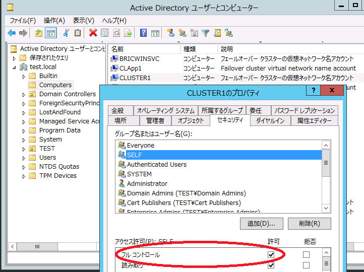
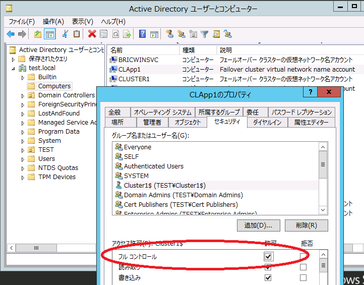

※ 本記事は弊社の Technet のサイトから移行した記事です。
いつも弊社製品をご利用いただきまして誠にありがとうございます。日本マイクロソフトの Windows サポートチームです。
本記事では弊社過去事例データベースからの情報を基に、Windows Server 2012 R2 を用いたフェールオーバー クラスター環境で以下のイベント ID 1206 が 24 時間毎に記録される場合の対処策について紹介します (同時にイベント ID 1207 が記録されることもあります)。
イベントの詳細:
イベント ID 1206
- ログの名前: System
- ソース: Microsoft-Windows-FailoverClustering
- イベント ID: 1206
- タスクのカテゴリ: ネットワーク名リソース
- レベル: エラー
- 説明: クラスター ネットワーク名リソース ‘<ネットワーク リソース名>’ に関連付けられたコンピューター オブジェクトをドメイン ‘<ドメイン名>’ で更新できませんでした。エラー コードは ‘Password change’ でした。クラスター ID ‘<クラスター名$>’ は、オブジェクトを更新するために必要なアクセス許可を持っていない可能性があります。ドメイン管理者と協力して、このクラスター ID がドメインのコンピューター オブジェクトを更新できるようにしてください。
イベント ID 1207
- ログの名前: System
- ソース: Microsoft-Windows-FailoverClustering
- イベント ID: 1207
- タスクのカテゴリ: ネットワーク名リソース
- レベル: エラー
- 説明: クラスター ネットワーク名リソース ‘<ネットワーク リソース名>’ に関連付けられたコンピューター オブジェクトをドメイン ‘<ドメイン名>’ で Resource post online 操作中に更新できませんでした。関連するエラー コードのテキストは次のとおりです: 操作エラーが発生しました。クラスター ID ‘<クラスター名$>’ は、オブジェクトを更新するために必要なアクセス許可を持っていない可能性があります。ドメイン管理者と協力して、このクラスター ID がドメインのコンピューター オブジェクトを更新できるようにしてください。
これらのイベントは ‘説明’ 部分のとおりActive Directory 内でのコンピューター パスワードの更新に失敗したことを示しており、その理由として ‘オブジェクトを更新するためのアクセス許可を持っていない可能性’ のあるイベントです。このパスワード更新とは以下のポリシーで構成される、コンピューター アカウントのパスワードのことです。
- ドメイン メンバ : コンピュータ アカウント パスワード : 定期的な変更を無効にする
https://msdn.microsoft.com/ja-jp/library/Cc785826(v=WS.10).aspx - ドメイン メンバ : 最大コンピュータ アカウントのパスワードの有効期間
https://msdn.microsoft.com/ja-jp/library/cc781050(v=ws.10A).aspx
それぞれの既定値は「更新を行なう」「有効期間は 30 日」となっています。クラスター仮想サーバーに対するパスワード有効期限はこの設定値の 75 % (既定値では 30 日 * 0.75 = 22.5 => 22 日毎) で更新がスケジュールされます。このパスワード更新はドメイン メンバーのコンピューター全般で行なわれますが、クラスター仮想サーバーで今回のイベントが記録される理由としてはドメイン内での認証が失敗するなどセキュアチャネルが破損している場合や、クラスターがパスワード更新を行なう為に必要なアクセス許可設定が不足している場合が考えられます。なお、このイベントが記録される状況はパスワード更新のタイミングで初めて表面化するため、いつどのような状況でセキュアチャネルが壊れたのかなどの原因については捉えることが非常に困難となります。一般的にこれらのイベントが記録される場合でもネットワーク名リソースはオンライン状態を維持しますので、クライアント アクセスへの影響が発生するような報告はありません。
◆ 対処方法について
もしご利用のクラスター環境において上記のイベントが記録される場合には、Active Directory 上の CNO (Cluster Name Object = クラスター管理用の仮想サーバー名オブジェクト)、VCO (Virtual Computer Object = アプリケーション/サービスが使用する仮想サーバー名のオブジェクト) のアクセス許可設定の確認とセキュアチャネルの「修復」操作として、以下の手順 1 から 4 までを行い、現象が改善するかについてご確認ください。
アクセス許可設定の確認
以下の手順 1 と 2 はコンピューター オブジェクトのアクセス許可設定の確認です。ドメイン コントローラーの [Active Directory ユーザーとコンピューター] から操作を行ないます。
1．CNO のフルコントロールの確認
フェールオーバー クラスター環境ではクラスター管理用に CNO のアクセス許可設定が使用されます。自分自身のオブジェクトへのフルコントロールがあるかの確認を行ない、不足するようなら追加します (既定ではフル コントロールはついています)。
a) ドメイン コントローラーの「Active Directory ユーザーとコンピューター」より CNO (クラスター管理用の名前) のコンピューター オブジェクトのプロパティを表示します。
b) [セキュリティ] タブ※より SELF を表示、フル コントロールにチェックが付いているかどうかを確認します。もしチェックが付いていない場合にはチェックを付けます。

2．VCO に対して CNO のフルコントロールがあるかの確認
VCO は CNO によって管理されています。VCO に CNO のフルコントロールがあるかを確認し、不足するようなら追加します (既定ではフル コントロールはついていませんがここでは明示的に追加します)。
a) ドメイン コントローラーの「Active Directory ユーザーとコンピューター」より VCO (クラスターの「役割」で使用する仮想サーバー名) のコンピューター オブジェクトのプロパティを表示します。
b) [セキュリティ]タブ※より CNO (クラスター管理用の名前) を表示、フル コントロールにチェックが付いているかどうかを確認します。もしチェックが付いていない場合にはチェックを付けます。

※ [セキュリティ] タブが表示されない場合には、「Active Directory ユーザーとコンピューター」メニュー バーの[表示] - [拡張設定] にチェックを付けます。
セキュアチャネルの「修復」操作
以下の手順 3 と 4 はセキュアチャネルの修復方法です。フェールオーバー クラスター マネージャーから行ないます。既にパスワードの不整合が発生してしまっている場合には CNO、VCO に対して以下の操作を行ないセキュアチャネルを修復します。
3. CNO の修復手順
a) フェールオーバー クラスター マネージャーより、左ペインのツリーを展開し [フェールオーバー クラスター マネージャー] - [クラスター名(FQDN表示)]を選択(反転表示)します。
b) 中央ペインの [クラスター コア リソース]を展開します。
c) [クラスター名] の下にある [名前: <cno の名前=””>] の右クリック メニューから[オフラインに移行]を選択しオフラインの状態にします。
d) [名前: <クラスター名>] の右クリック メニューから [他のアクション] - [修復] ※をクリックすることにより、セキュア チャネルの修復を行うことが出来ます。
4. VCO の修復手順
a) フェールオーバー クラスター マネージャーより、左ペインのツリーを展開し [役割] を表示、中央ペインから対象の役割を選択(反転表示)します。
b) 中央ペイン下段の [リソース] タブを表示します。
c) [サーバー名] の下にある [名前: <vco の名前=””>] の右クリック メニューから[オフラインに移行]を選択し、オフラインの状態にします。
d) [名前: <vco の名前=””>] の右クリック メニューから[他のアクション] - [修復] ※をクリックすることにより、セキュア チャネルの修復を行うことが出来ます。
※ [修復] メニューはリソース オンライン時にはグレーアウトされており選択することが出来ません。そのため、一時的に、手順c でオフラインにする必要があります。[修復]メニュー実施後は自動的にオンラインのステータスに戻ります。
いかがでしたでしょうか。本投稿が少しでも皆様のお役に立てば幸いです。
(※ 2015 年 10 月 06 日に Ask Core Microsoft Japan Windows Technology Support に公開した情報のアーカイブです。)